This vignette demonstrates how to control the visual aesthetics of
the pmxhelpr plotting functions. pmxhelpr
styles its plots with ggstylekit, which provides a uniform
approach to styling plots.
options(scipen = 999, rmarkdown.html_vignette.check_title = FALSE)
library(pmxhelpr)
library(dplyr, warn.conflicts = FALSE)
library(ggplot2, warn.conflicts = FALSE)
library(Hmisc, warn.conflicts = FALSE)
library(patchwork, warn.conflicts = FALSE)Data and Model Objects
The example datasets used in this vignette are based around the
data_sad dataset internal to pmxhelpr. This
dataset is based on a single ascending dose (SAD) study of an orally
administered drug product with a parallel group food effect (FE) cohort
and is formatted in a analysis-ready format for non-linear mixed effects
(NLME) modeling. data_sad_pkfit is a modified version of
data_sad, with PK model predictions appended.
This vignette will assume familiarity with the structure of these datasets from other vignettes.
data_sad
Dataset definitions can be viewed by calling
?data_sad.
Let’s define some variables that may be useful in plotting and filter down to PK or PD relevant records.
data <- data_sad %>%
mutate(`Food Status` = ifelse(FOOD == 0, "Fasted", "Fed"),
DoseFood = paste(DOSE, "mg", `Food Status`)) %>%
mutate(`Dose and Food` = var_addn(DoseFood, ID))
gof_data <- data_sad_pkfit %>%
mutate(`Food Status` = ifelse(FOOD == 0, "Fasted", "Fed"),
DoseFood = paste(DOSE, "mg", `Food Status`)) %>%
mutate(`Dose and Food` = var_addn(DoseFood, ID))
data_pk <- filter(data, CMT %in% c(1,2))
data_pd <- filter(data, CMT %in% c(1,3))
data_pkfit <- filter(gof_data, CMT %in% c(1,2))
data_nca <- filter(data_sad_nca, PART == "Part 1-SAD")
doseprop_data_nca <- df_doseprop(data_nca, metrics = c("aucinf.obs", "cmax"), metric_name_var = "PPTESTCD")An example PK model (pkmodel) in mrgmod
format is provided in the internal package library. This is loaded using
the helper function model_mread_load(), which wraps
mrgsolve::mread().
model <- model_mread_load("pkmodel")
#> Building pkmodel_cpp ... done.Plot Styling with ggstylekit in
pmxhelpr
pmxhelpr re-exports four functions from
ggstylekit:
-
reveal(): map a new data variable to an aesthetic or facet, then re-style -
restyle_plot(): adjust a plot style after it has been styled. -
combine_styled_plots(): combine styled plots and collect legends -
legend_spec(): describe one legend, for thelegendsstyle field
Additionally, pmxhelpr includes style
preset functions which return a
ggstylekit::style_spec() object for each
plot_*() function containing the defaults for the plotting
family. These functions
-
style_dvtime()/plot_dvtime(), -
style_gof()/plot_gof(), -
style_dvconc()/plot_dvconc(), -
style_doseprop()/plot_doseprop(), -
style_vpc()/plot_vpc_cont()/plot_vpc_cens()
These style presets are passed to the style argument of
plotting functions and use the following
syntax:style_<fn>(<map> = c(<role> = <value>)).
Unique roles in pmxhelpr plot families
can be passed to per-series maps in the style presets.
These elements are overridden based on the roles
specified, with remaining roles inheriting the
defaults.
plot_dvtime(data_pk, dv_var = ODV, style = style_dvtime())Basics of Plot Styling with Style Specs
Defaults
Call a style preset function with no arguments to print its defaults.
style_dvtime()
#> <ggstylekit_style_spec>
#> colors NULL
#> fill NULL
#> linetypes solid , solid , dashed, dashed
#> alphas 0.5, 0.5, 0.0, 1.0, 1.0, 1.0, 1.0
#> shapes 1, 16
#> sizes 0.75, 1.25
#> linewidths 0.50, 0.75, 0.75, 0.50, 0.50
#> point_color NULL
#> point_alpha NULL
#> point_size NULL
#> point_shape NULL
#> line_color NULL
#> line_alpha NULL
#> line_linetype NULL
#> line_linewidth NULL
#> line_fill NULL
#> errorbar_color NULL
#> errorbar_alpha NULL
#> errorbar_linetype NULL
#> errorbar_linewidth NULL
#> errorbar_width NULL
#> errorbar_fill NULL
#> bar_fill NULL
#> bar_color NULL
#> bar_alpha NULL
#> bar_linewidth NULL
#> area_fill NULL
#> area_color NULL
#> area_alpha NULL
#> area_linewidth NULL
#> box_fill NULL
#> box_color NULL
#> box_alpha NULL
#> box_linewidth NULL
#> title NULL
#> xlabel NULL
#> ylabel NULL
#> xlims NULL
#> ylims NULL
#> logx NULL
#> logy NULL
#> xbreaks NULL
#> ybreaks NULL
#> xminor_breaks NULL
#> yminor_breaks NULL
#> xtick_labels NULL
#> ytick_labels NULL
#> xorder NULL
#> yorder NULL
#> equal_axis NULL
#> legends NULL
#> legend.position NULL
#> legend.title.position top
#> legend_nrow NULL
#> legend_ncol NULL
#> legend.title.hjust NULL
#> caption_hjust NULL
#> fill_alpha NULL
#> facet NULL
#> facet_scales NULL
#> facet_nrow NULL
#> facet_ncol NULL
#> theme <ggplot2 theme>Maps within the style_spec
The style_spec() object bundles several types of
maps:
Per-series maps: apply to multiple plot layers specific to
pmxhelprplot families:colors,fill,linetypes,alphas,shapes,sizes,linewidthsAcross-geom maps: apply to an entire geom family:
point_color,point_shape,point_size,point_shape,line_color,line_alpha,line_linetype,line_linewidth,line_fill,bar_fill,bar_color,bar_alpha,bar_linewidth,area_fill,area_color,area_alpha,area_linewidth,box_fill,box_color,box_alpha,box_linewidth,fill_alphaLabels and axes: apply to labels and axes:
title,xlabel/ylabel,xlims/ylims,logx/logy,xbreaks/ybreaks,xminor_breaks/yminor_breaks,xtick_labels/ytick_labels,xorder/yorder,equal_axis.Legends: apply to legends and can be set by a
legend_spec()object:legends,legend.position,legend.title.position,legend_nrow/legend_ncol,legend.title.hjust,caption_hjustFacets: apply to facets:
facet,facet_scales,facet_nrow/facet_ncolTheme: apply a ggplot2
themeobject.
pmxhelpr sets a shared house theme based on
ggplot2::theme_bw(), with the all minor gridlines and major
vertical gridlines removed.
Per-series map Roles by plot family
Unique roles in each plot family style spec are as follows that can be passed to per-series maps are summarized below.
-
style_dvtime(): Roles includeobs_point,obs_line,cent_point,cent_line,cent_errorbar,ref_line,loq_line -
style_gof(): Roles include the elements instyle_dvtime, plus the overlaycolorskeyed by label (OBS,DV,PRED,IPRED) -
style_dvconc(): Roles includeobs_point,ref_line,loess,linear -
style_doseprop(): Roles includeobs_point,linear -
style_vpc(): Roles includeobs_point,obs_median_line,obs_pi_line,sim_pi_line,sim_median_line,loq_line,sim_pi_ci,sim_pi_area,sim_median_ci
Available roles in per-series maps
can be viewed from the style present object using the $
operator.
style_dvtime()$alphas
#> obs_point obs_line cent_point cent_line cent_errorbar
#> 0.5 0.5 0.0 1.0 1.0
#> ref_line loq_line
#> 1.0 1.0Builder arguments versus style fields
A few aesthetic decisions belong to the plot builder rather than to the style, because the builder needs them to decide what to draw, not just how to draw it. Where the two overlap, the builder argument wins:
-
log_y:plot_dvtime(),plot_dvconc(), andplot_gof()set the stylelogyfrom the plotting functionlog_yargument. This is becauselog_yargument in the plotting function also controls the central tendency summary measure (e.g., arithmetic versus geometric mean). -
plot_doseprop()axes and facets: this plotting family applies its own log-logscale_*_log10()and per-metricfacet_wrap(), so the style spec’slogx/logy/xbreaks/facetfields are ignored. The facet layout fields (facet_scales, default"free";facet_nrow;facet_ncol) are honored. -
Visibility:
plot_gof_shown()/plot_vpc_shown()control which layers are built and the style spec controls how the built layers look. Settingstyle_vpc(alphas = c(obs_point = 0))draws an invisible layer and includes it in the legend whereasplot_vpc_shown(obs_point = FALSE)omits it entirely.shownis the preferred method when a layer is not wanted.
Examples
Inline override
A style present can be passed and modified inline within the plotting function call.
plot_dvtime(
data = data_pk, dv_var = ODV, col_var = `Dose and Food`,
cent = "mean_sdl", log_y = TRUE, loq_method = 2,
style = style_dvtime(alphas = c(obs_point = 0))
) +
scale_x_continuous(breaks = seq(0, 168, 24))+
labs(y = "Concentration (ng/mL)", x = "Time (hours)")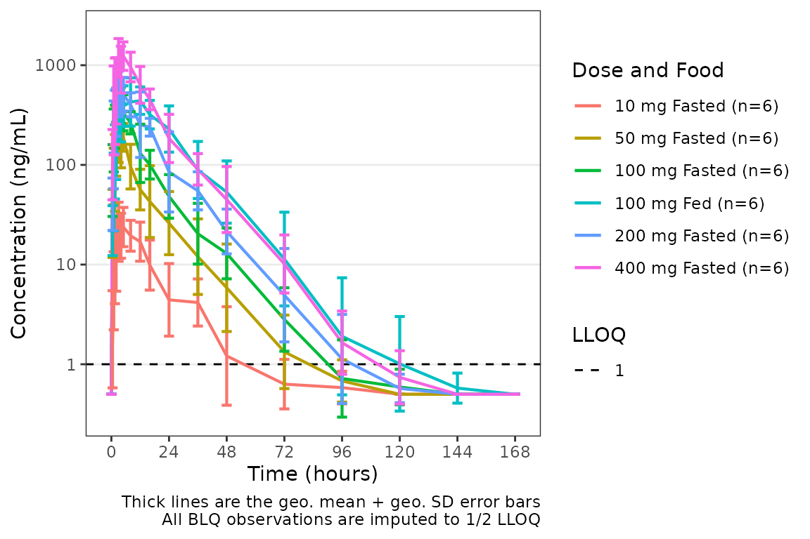
Reusable style object
Often, one may be generating a series of plots with common styling.
In this case, it is advantageous to build a style object once and reuse
it across plots. In addition to elements mapped to ggplot2
aesthetic layers, the style spec object can be used to specify axis
elements, labels, legends, and themes.
new_dvtime_style <- style_dvtime(
alphas = c(obs_point = 0),
xbreaks = seq(0, 168, 24),
ybreaks = c(0.1, 1, 10, 100, 1000),
ylims = c(0.1, 2000),
xlabel = "Time (hours)",
ylabel = "Concentration (ng/mL)",
title = "Single Ascending Dose"
)
plot_dvtime(data_pk, dv_var = ODV, col_var = `Dose and Food`,
cent = "mean_sdl", log_y = TRUE, loq_method = 2,
style = new_dvtime_style) 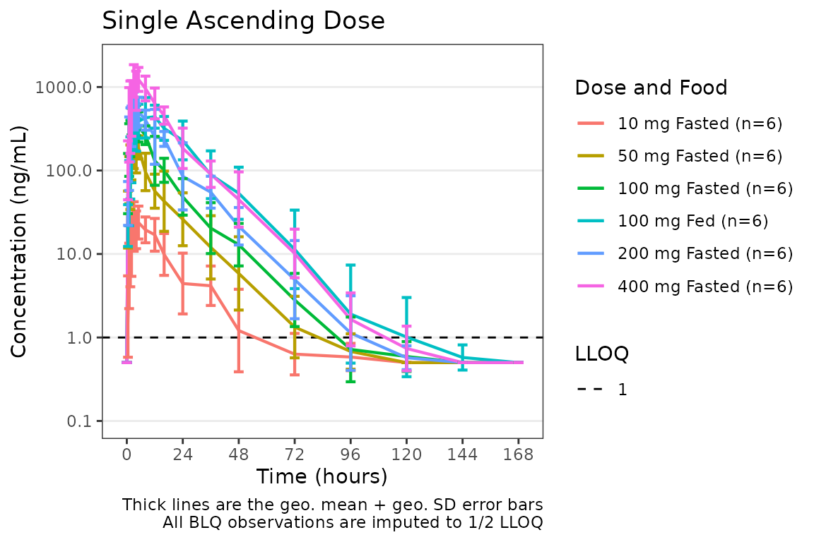
Error bar cap width
Error bar cap width is the errorbar_width style field,
in x-axis units. The presets leave it unset, and
plot_dvtime() / plot_gof() then default it to
2.5% of the maximum nominal time so the caps scale with the time axis.
Set it in the style to override:
plot_dvtime(data_pk, dv_var = ODV, col_var = `Dose and Food`,
cent = "mean_sdl", log_y = TRUE, loq_method = 2,
style = style_dvtime(alphas = c(obs_point = 0), errorbar_width = 10))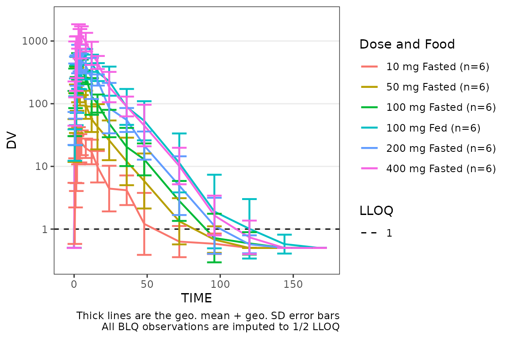
Labeling with symbols using bquote()
The label keys title, xlabel, and
ylabel accept bquote(), which is the practical
way to put symbols and subscripts into a label:
plot_dvconc(
data = data_pd, dv_var = CFB, idv_var = CONC, ref = 0, loess = TRUE,
style = style_dvconc(
xlabel = bquote("Concentration" ~ (ng %.% mL^-1)),
ylabel = bquote(Delta ~ "Response (%)")
)
)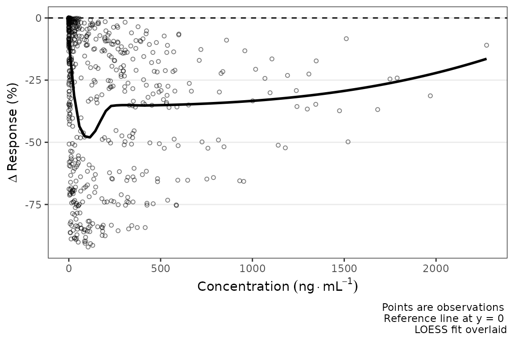
Styling legends with legend_spec()
Overview
The legends map accepts a
legend_spec() object or list of legend spec objects. A
legend spec describes one legend, keyed either by the data column
displayed (col) or by the plot map channel
(channel).
plot_dvtime(
data_pk, dv_var = ODV, col_var = `Food Status`,
dose_var = "DOSE", dosenorm = T,
cent = "median", log_y = TRUE,
style = style_dvtime(
ylabel = "Dose-normalized Concentration (ng/mL)",
xlabel = "Time (hours)",
xbreaks = seq(0, 168, 24),
legends = legend_spec(
col = `Food Status`,
title = "Meal Status",
labels = c(Fasted = "Fasted (overnight)", Fed = "Fed (high-fat)")
),
legend.position = "bottom",
legend_nrow = 1
)
)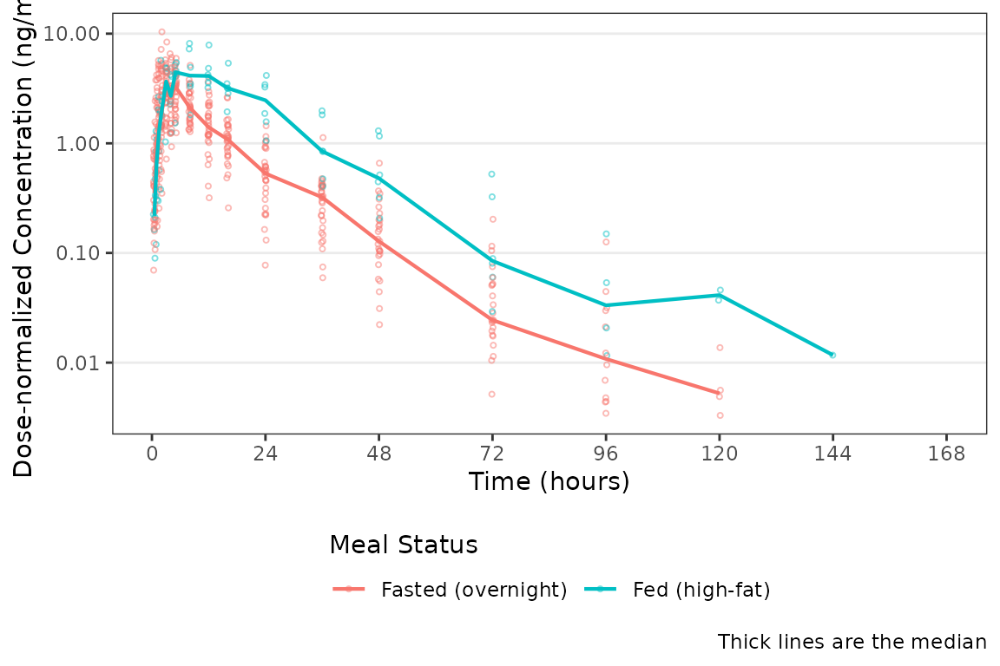
Otherlegend_spec() arguments include:
-
hide = TRUEsuppresses a legend while leaving its mapping in place -
ordersets which legend is drawn first when a plot has multiple -
nrow/ncoloverride thelegend_nrow/legend_ncolfor the legend specified -
combine_withfolds a variable into an existing legend, when each key of that legend identifies exactly one value of the folded column.
Label overrides in legends and facets
A legend spec’s labels also relabel matching facet
strips, if the facetting is specified in the style spec, rather than
added as a new layer with facet_wrap().
plot_dvtime(
data_pk, dv_var = ODV, col_var = `Food Status`,
dose_var = "DOSE", dosenorm = T,
cent = "median", log_y = TRUE,
style = style_dvtime(
ylabel = "Dose-normalized Concentration (ng/mL/mg)",
xlabel = "Time (hours)",
xbreaks = seq(0, 168, 24),
legends = legend_spec(
col = `Food Status`,
title = "Meal Status",
labels = c(Fasted = "Fasted (overnight)", Fed = "Fed (high-fat)")
),
legend.position = "bottom",
legend_nrow = 1,
facet = "Food Status",
facet_nrow = 1,
facet_ncol = 2,
facet_scales = "fixed"
)
) 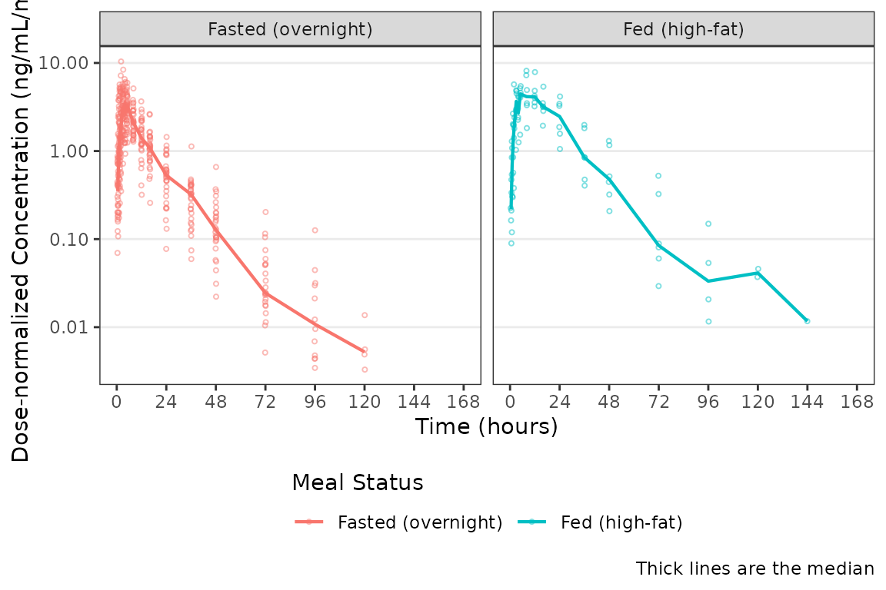
The original labels for the variable are retained in
facet strips with facet_wrap().
plot_dvtime(
data_pk, dv_var = ODV, col_var = `Food Status`,
dose_var = "DOSE", dosenorm = T,
cent = "median", log_y = TRUE,
style = style_dvtime(
ylabel = "Dose-normalized Concentration (ng/mL/mg)",
xlabel = "Time (hours)",
xbreaks = seq(0, 168, 24),
legends = legend_spec(
col = `Food Status`,
title = "Meal Status",
labels = c(Fasted = "Fasted (overnight)", Fed = "Fed (high-fat)")
),
legend.position = "bottom",
legend_nrow = 1
)
) +
facet_wrap(~`Food Status`)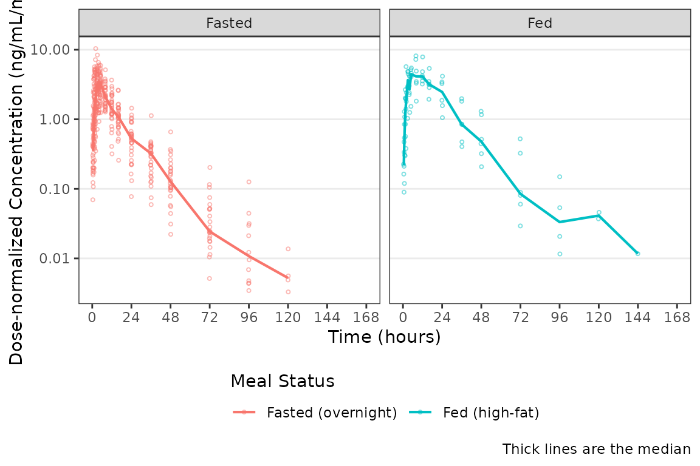
Remove a legend
To drop a legend entirely, one can key the legend spec to the
channel.
plot_dvtime(
data_pk, dv_var = ODV, col_var = `Dose and Food`, cent = "none", id_var = ID,
log_y = TRUE,
style = style_dvtime(
ylabel = "Concentration (ng/mL)",
xlabel = "Time (hours)",
xbreaks = seq(0, 168, 24),
legends = legend_spec(channel = "color", hide = TRUE)
)
) +
facet_wrap(~`Dose and Food`)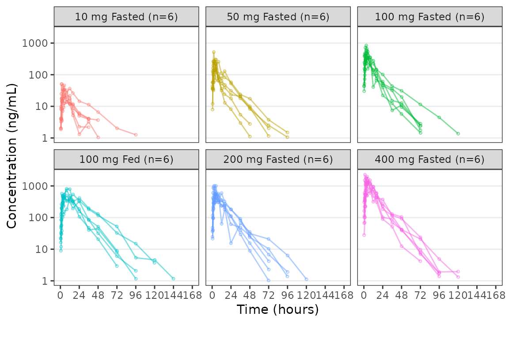
Per-series maps in pmxhelpr style
presets
Palette functions
A per-series map can be a palette function(n) rather
than a named vector. ggstylekit calls the palette function
with the unique number of groups in each plot, so one house style colors
every plot without naming its groups.
viridis_pal <- function(n) grDevices::hcl.colors(n, "Viridis")
plot_dvtime(
data_pk, dv_var = ODV, col_var = `Dose and Food`, cent = "mean", log_y = TRUE,
style = style_dvtime(colors = viridis_pal,
ylabel = "Concentration (ng/mL)", xlabel = "Time (hours)",
xbreaks = seq(0, 168, 24))
) +
facet_wrap(~PART)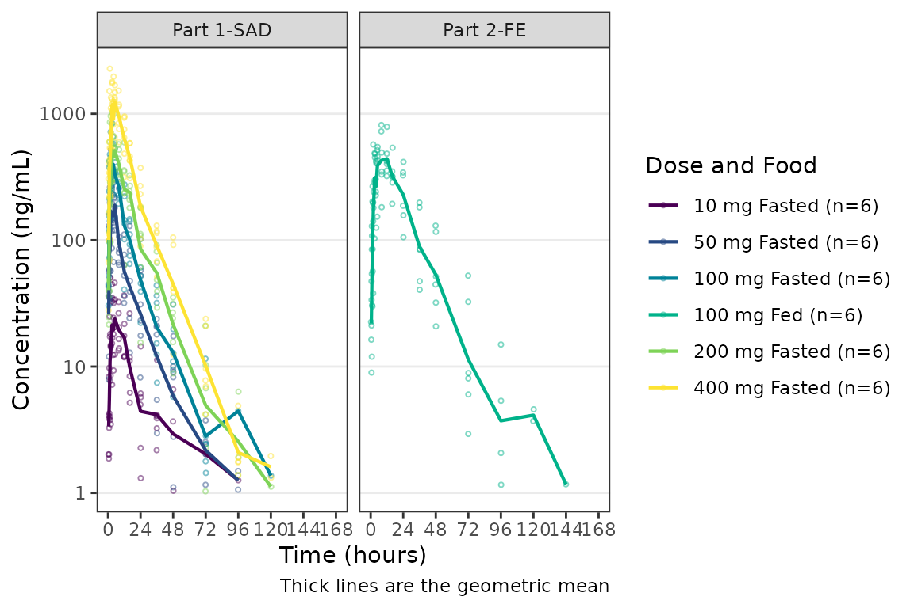
Any function(n) returning n values works. A
palette has no names to merge entry-wise, so it replaces the preset
default map rather than merging onto it.
Trend line customization (plot_dvconc())
Trend line colors are controlled using the per-series
map colors with the loess/linear
roles. The 95% CI ribbon is controlled by the
ggstylekit default line_fill.
plot_dvconc(
data = data_pd, dv_var = CFB, idv_var = CONC, ref = 0,
loess = TRUE, se_loess = TRUE,
style = style_dvconc(colors = c(loess = "darkred"), line_fill = "darkred")
) +
labs(x = "Concentration (ng/mL)", y = "Response (% CFB)")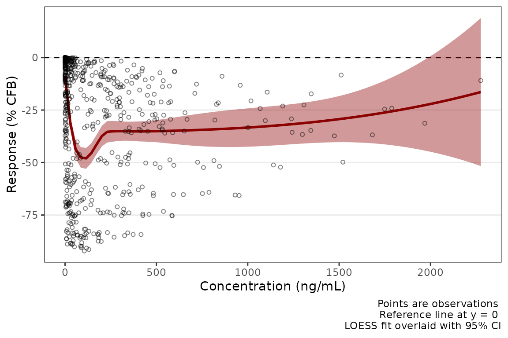
Dose-proportionality facet layout
(plot_doseprop())
plot_doseprop() facets by exposure metric, so the
style’s facet_ncol, facet_nrow, and
facet_scales fields control that layout. Here the two
metrics are stacked in a single column.
plot_doseprop(dplyr::filter(data_sad_nca, PART == "Part 1-SAD"),
metrics = c("aucinf.obs", "cmax"),
style = style_doseprop(colors = c(linear = "navy"),
facet_ncol = 1))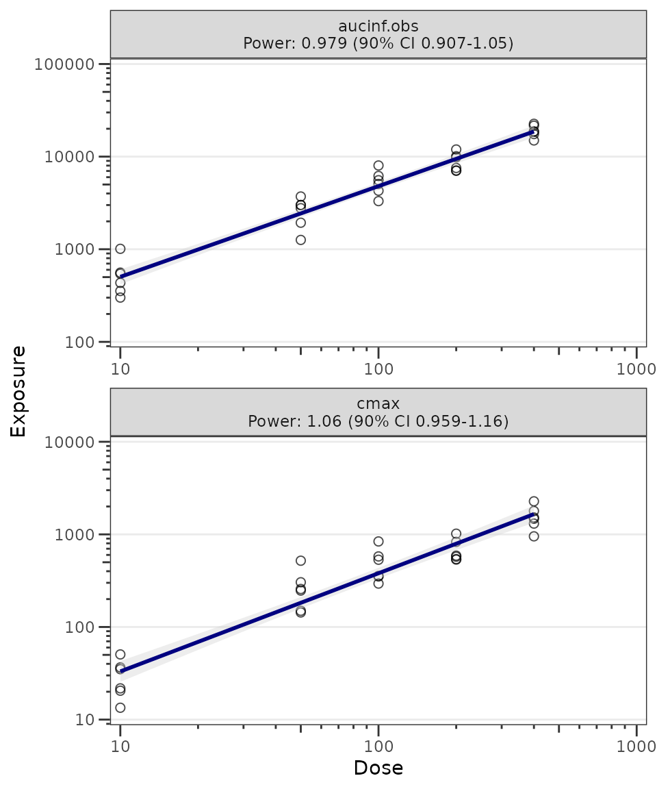
GOF overlay colors (plot_gof())
The DV (OBS), PRED, and PRED central tendency lines are the
role keys for the per-series map
colors.
plot_gof(
data = data_pkfit, dv_var = ODV, cent = "mean", log_y = TRUE,
style = style_gof(colors = c(OBS = "grey60", DV = "black",
PRED = "#3388cc", IPRED = "firebrick"),
xlabel = "Time (hours)", ylabel = "Concentration (ng/mL)",
xbreaks = seq(0, 168, 24)))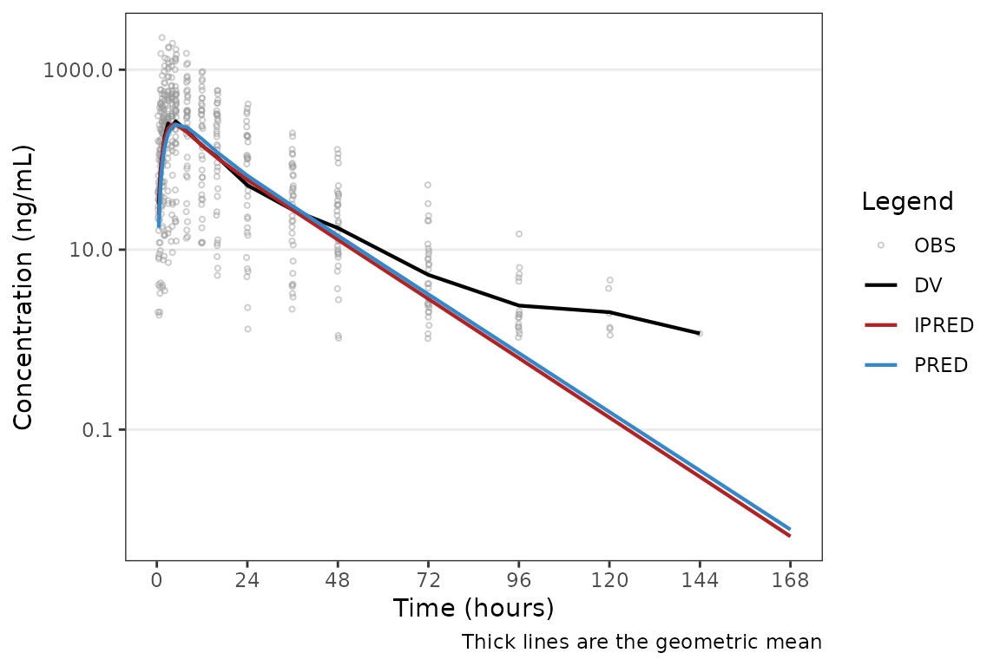
VPC plot color scheme (plot_vpc_cont())
The per-series maps colors controls
colors for points and lines while confidence/prediction interval ribbon
fills are controlled by fill.
sim <- df_mrgsim_replicate(data = data_pk, model = model, replicates = 100,
dv_var = ODV, carry_out = c("LLOQ", "FOOD"))
pcvpc_style <- style_vpc(
colors = c(obs_point = "#000000", obs_median_line = "#000000",
obs_pi_line = "#000000"),
fill = c(sim_median_ci = "#3388cc", sim_pi_ci = "#3388cc"),
ylabel = "PRED-corrected Conc. (ng/mL)",
xlabel = "Time (hours)",
xbreaks = seq(0, 168, 24),
xlims = c(0, 168)
)
plot_vpc_cont(sim, loq = 1, pcvpc = TRUE,
style = pcvpc_style) +
scale_y_log10(guide = "axis_logticks")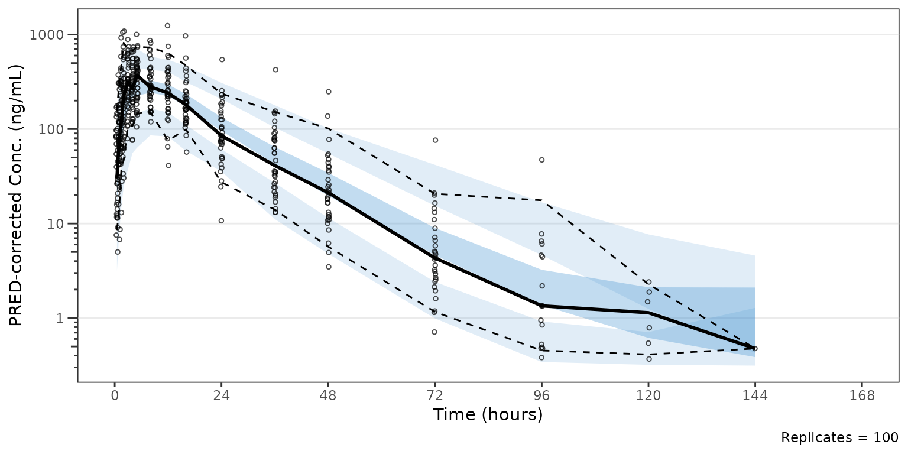
Faceted VPC plot with free scales
(plot_vpc_cont())
As discussed in Visual Predictive Check
Workflow, VPC plots should ONLY be facetted via the
strat_var argument and SHOULD NOT be facetted
post-hoc with facet_wrap. This is to ensure that the
summary statistics from the simulation are also calculated stratified by
the faceting variable.
However, because the facet_wrap call is internal to the
VPC plotting functions, the user is not able to change the
scales argument from the "fixed" preset to
"free_y". This can be accomplished in the style.
sim <- df_mrgsim_replicate(data = data_pk, model = model, replicates = 100,
dv_var = ODV, carry_out = c("LLOQ", "FOOD", "DOSE"))
vpc_style_facet <- style_vpc(
ylabel = "Concentration (ng/mL)",
xlabel = "Time (hours)",
xbreaks = seq(0, 168, 24),
xlims = c(0, 168),
facet_scales = "free_y"
)
plot_vpc_cont(sim, loq = 1, strat_var = DOSE,
style = vpc_style_facet)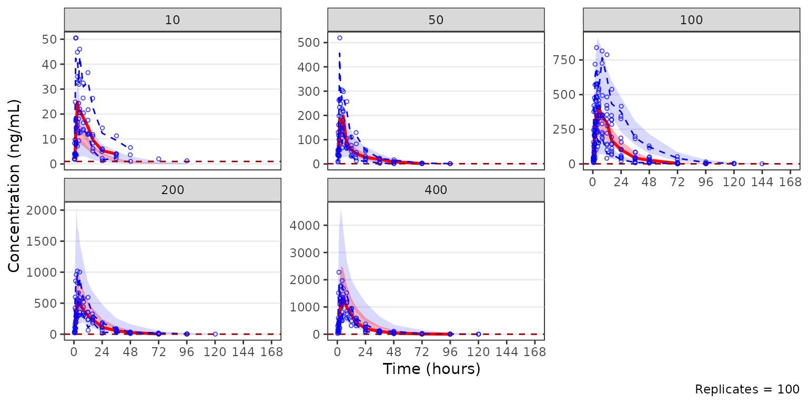
VPC legend (plot_vpc_legend())
The VPC plotting functions do not generate a legend.
plot_vpc_legend() builds a standalone legend plot intended
to be combined with the VPC plot into a single figure.
Pass the same style object along with the same
shown, ci, and pi as the plotting
function to generate the corresponding legend.
plot_vpc_legend(style = pcvpc_style, lloq = 1)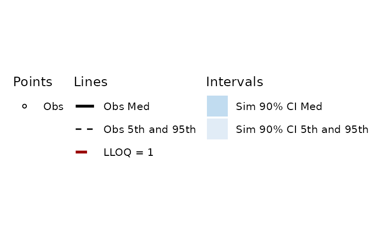
Updating the plot theme
The theme field takes any ggplot2 theme object and
replaces the pmxhelpr house theme wholesale. Build on the
house theme by adding to it rather than starting over:
plot_dvtime(
data_pk, dv_var = ODV, col_var = `Dose and Food`,
cent = "mean_sdl_upper",
style = style_dvtime(
ylabel = "Concentration (ng/mL)", xlabel = "Time (hours)",
xbreaks = seq(0, 168, 24),
theme = theme_minimal(base_size = 8) +
theme(panel.grid.minor = element_blank(),
panel.grid.major = element_blank(),
legend.position = "bottom")
)
)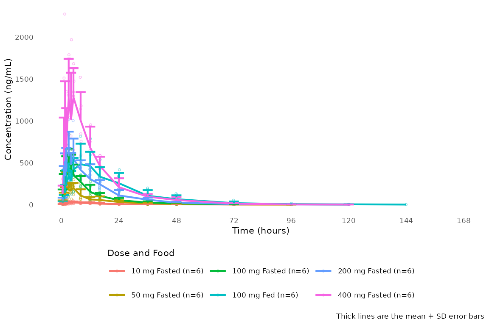
Post-hoc styling: making aesthetic changes with
restyle_plot()
ggstylekit not only handles plot styling a
priori, it also handles plot styling a posteriori after a
finished plot object has been generated.
restyle_plot() merges style fields onto a finished plot.
Restyling works analogously to the up front styling with style
specs.
For example, if one wanted to remove points and the legend from an
existing plot, this can be accomplished as follows with
restyle_plot.
p <- plot_dvtime(data_pk, dv_var = ODV, cent = "median", log_y = TRUE,
loq_method = 2,
style = style_dvtime(
xlabel = "Time (hours)",
ylabel = "Dose-normalized Conc. (ng/mL/mg)",
xbreaks = seq(0, 168, 24)
))
p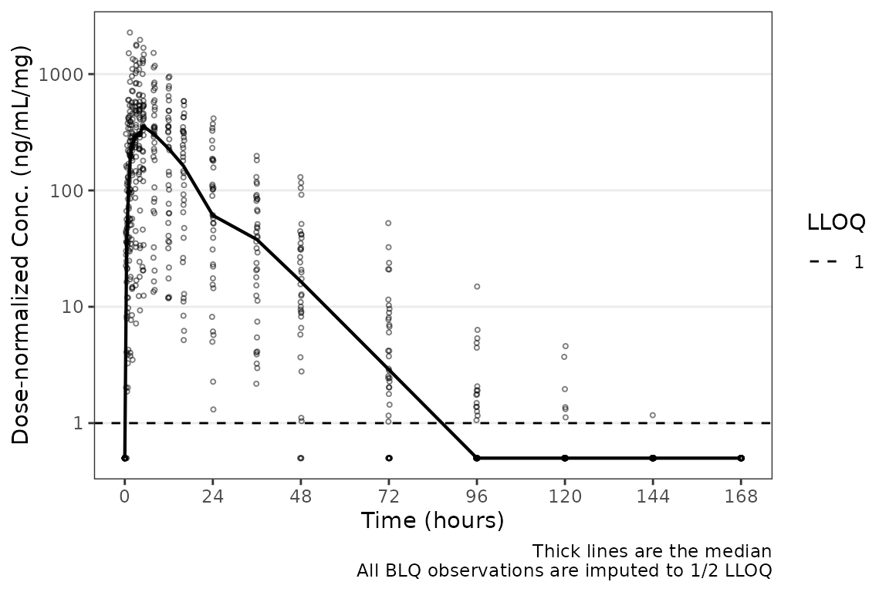
restyle_plot(p,
alphas = c(obs_point = 0),
legends = legend_spec(channel = "linetype", hide = TRUE))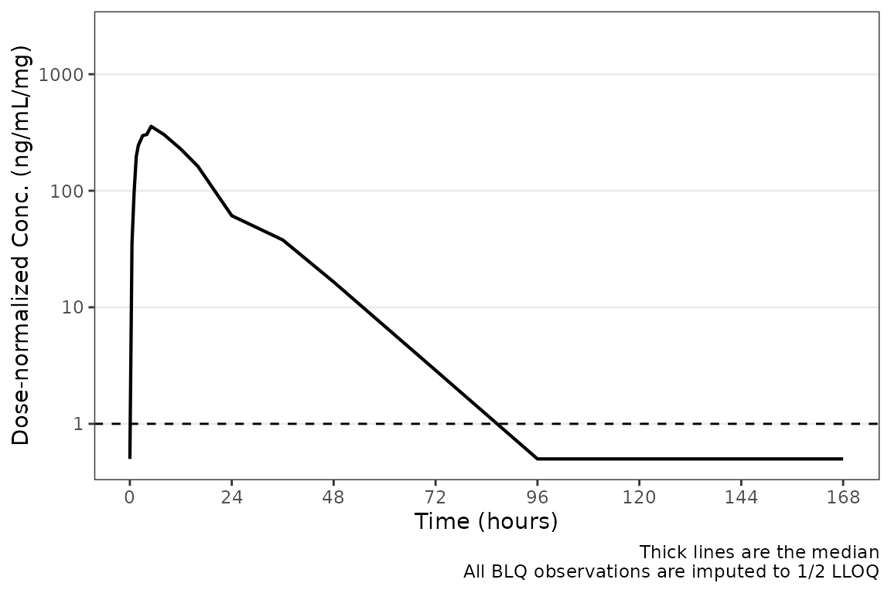
Post-hoc styling: surfacing new variables with
reveal()
One of the most powerful features of ggstylekit is the
reveal() function.
reveal() maps a variable present in the underlying plot
dataset that is not currently mapped to a graphical channel (or a
facet).
Mapping to all layers with as =
Use as = to inherit that channel’s default values.
reveal(p, `Food Status`, as = "colors")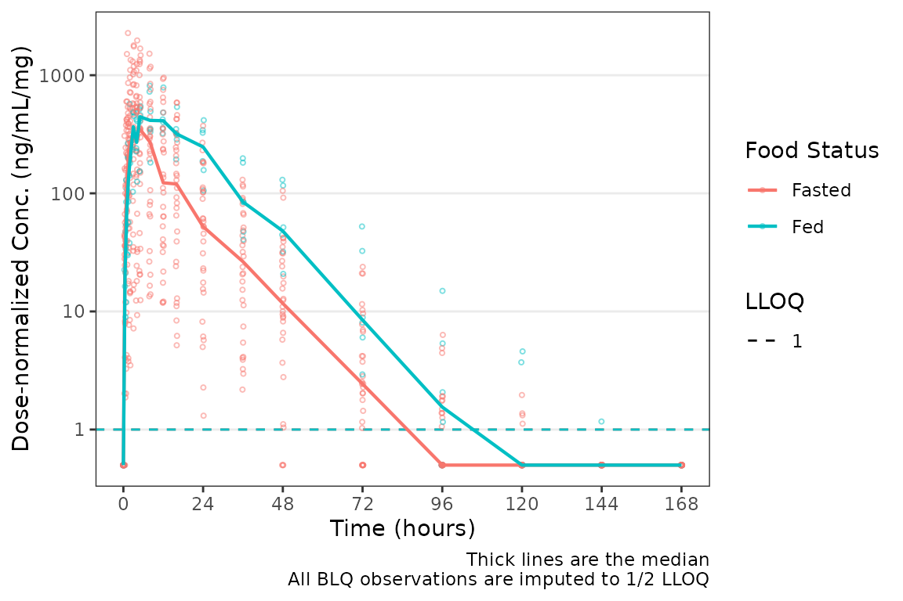
Alternatively, the values can be supplied manually.
reveal(p, `Food Status`,
colors = c(Fasted = "#3388cc", Fed = "firebrick"),
labels = c(Fasted = "Fasted (overnight)", Fed = "Fed (high-fat)"))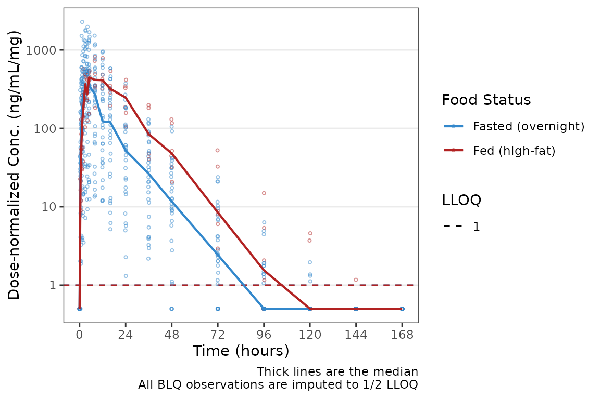
Facets are also a channel that can be mapped like any other with
reveal.
p2 <- reveal(p, `Food Status`, as = "facet",
colors = c(Fasted = "#3388cc", Fed = "firebrick"),
labels = c(Fasted = "Fasted (overnight)", Fed = "Fed (high-fat)"))
p2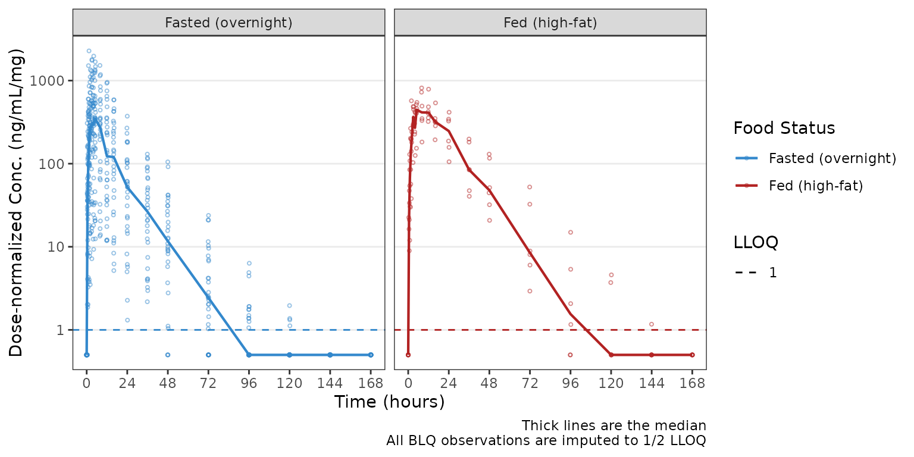
Targeting specific layers with on
By default, reveal() maps the variable onto every layer
that can display the channel. The on argument narrows this
to an entity — "point",
"line", "bar", "area", or
"box" — or to a named series.
Here the central tendency line and its error bars are left unmapped,
reflecting the totality of the data, while the points are mapped to food
status with on
p_sdl <- plot_dvtime(data_pk, dv_var = ODV, cent = "mean_sdl", log_y = TRUE,
style = style_dvtime(xlabel = "Time (hours)",
ylabel = "Concentration (ng/mL)",
xbreaks = seq(0, 168, 24)))
reveal(p_sdl, `Food Status`, as = "colors", on = "point")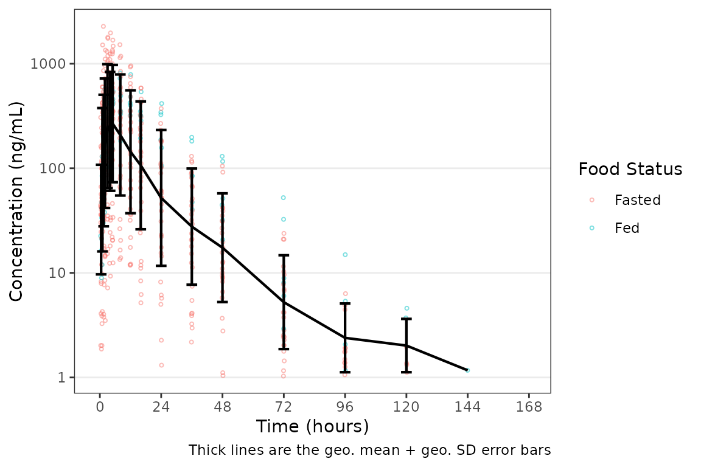
Values are supplied with on exactly as they are without
it.
reveal(p_sdl, `Food Status`, on = "point",
colors = c(Fasted = "#3388cc", Fed = "firebrick"),
labels = c(Fasted = "Fasted (overnight)", Fed = "Fed (high-fat)"))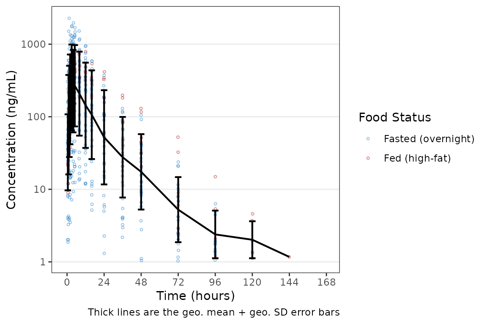
on is also how a channel that is already in use is
revealed onto. A plot built with col_var already maps
color, and revealing a second variable onto color without
on returns the plot unchanged, with a message naming the
entities and series available to target. Two variables sharing one
channel are drawn in a single legend, so revealing onto a free channel —
as = "shapes", as = "linetypes",
as = "facet" — is usually the clearer choice.
Combining plots with combine_styled_plots
combine_styled_plots() arranges several styled plots
into one figure with a single collected legend.
Build the panels with a shared style so the collected legend is meaningful.
panel_style_gm <- style_dvtime(
alphas = c(obs_point = 0.3),
xlabel = "Time (hours)",
ylabel = "Concentration (ng/mL)",
title = "Geometric Mean"
)
panel_style_med <- style_dvtime(
alphas = c(obs_point = 0.3),
xlabel = "Time (hours)",
ylabel = "Concentration (ng/mL)",
title = "Median"
)
p_mean <- plot_dvtime(data_pk, dv_var = ODV, col_var = `Food Status`,
cent = "mean", log_y = TRUE,
style = panel_style_gm)
p_median <- plot_dvtime(data_pk, dv_var = ODV, col_var = `Food Status`,
cent = "median", log_y = TRUE,
style = panel_style_med)Then combine them. Unnamed arguments are the plots. Named arguments
pass through to patchwork::wrap_plots(), so
axes = "collect" also de-duplicates the shared axis
labels.
p_combo <- combine_styled_plots(p_mean, p_median, ncol = 2, axes = "collect")
p_combo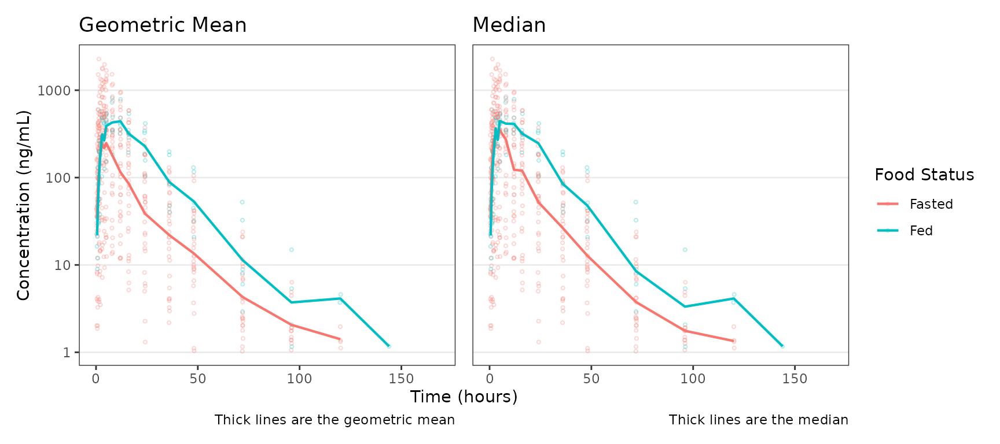
The combined figure is still a styled object, so
restyle_plot() and reveal() continue to work.
Here the collected legend is re-titled and moved to the bottom of the
figure:
restyle_plot(p_combo,
legends = legend_spec(`Food Status`, title = "Meal Status",
labels = c(Fasted = "Fasted (overnight)",
Fed = "Fed (high-fat)")),
colors = c(Fasted = "#3388cc", Fed = "firebrick"),
legend.position = "bottom")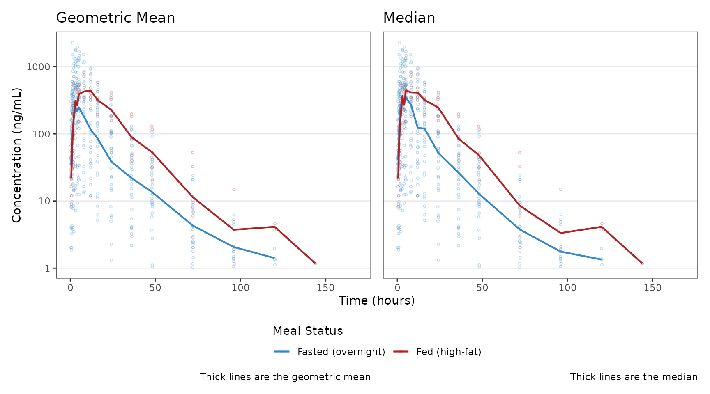
legend.position moves the collected legend on the
combined figure, as restyle_plot() reaches the assembled
figure and not only the individual panels. Note that labels
is not a style field: legend entries are relabeled through the
labels argument of legend_spec(), as
above.
Panels do not have to come from the same plot family; however, legends need to be identical and drawn from the same layer sets. Here concentration vs time and response vs concentration panels colored by an indicator variable for female sex (SEXF).
The legend is suppressed in one plot in order to have only a single legend collected into the paneled combined plot, as even though the legends are visually identical, they are built from different layers.
p_pk <- plot_dvtime(data_pk, dv_var = ODV, col_var = SEXF,
dose_var = DOSE, dosenorm = TRUE,
cent = "mean", log_y = TRUE,
style = style_dvtime(xlabel = "Time (hours)",
ylabel = "Dose-normalized Conc. (ng/mL/mg)",
xbreaks = seq(0, 168, 24),
legends = legend_spec(channel = "color",
hide = TRUE)))
p_pd <- plot_dvconc(data_pd, dv_var = CFB, idv_var = CONC, col_var = SEXF,
col_trend = TRUE, ref = 0, loess = TRUE,
style = style_dvconc(xlabel = "Concentration (ng/mL)",
ylabel = "Response (% CFB)"))
combine_styled_plots(p_pk, p_pd, ncol = 2)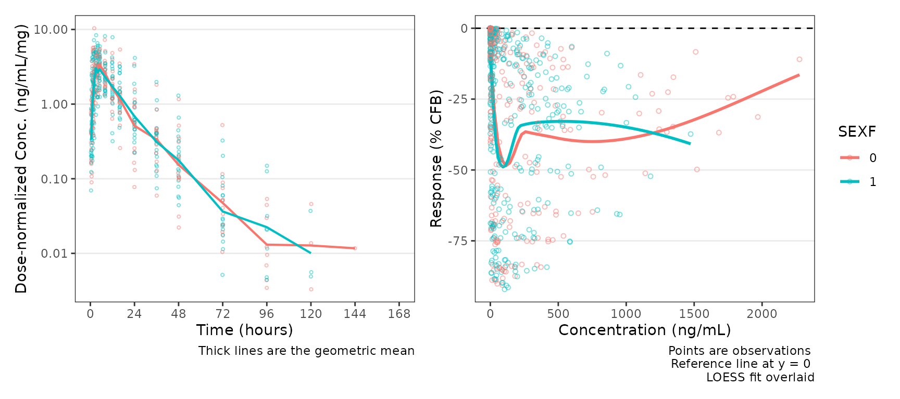
Two things to keep in mind when generated combined plots with
combine_styled_plots:
-
combine_styled_plots()flattens the input plot panels and discards any patchwork annotations or layouts. Add titles and tags to the combined plot returned withpatchwork::plot_annotation(). -
guides = "collect"is the default. Passguidesexplicitly to override it.
combine_styled_plots(p_pk, p_pd, ncol = 2) +
plot_annotation(title = "Single ascending dose PK/PD", tag_levels = "A")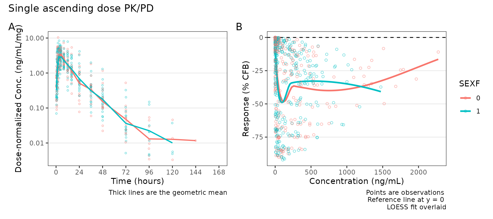